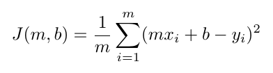
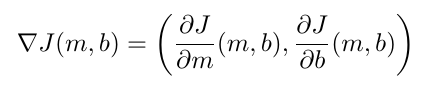
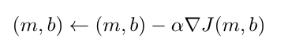

Given a set of data, linear regression is a way to fit a linear model to the data. This is done by minimizing a certain "cost function", which measures the deviation of the data from the hypothesized linear model. The linear model with the least cost then has the "best fit" for the data.
Consider a set of 2-dimensional data, that is, a collection of points (x,y) in the plane. A linear model for this data will be a line of the form y=mx+b. We hope to find the values of slope m and intercept b that minimize the cost function, which we take as the average of the squared vertical distances from the data points to the line:
|  |
How do we find the values of m and b that minimize J(m,b)? This is a multivariable optimization problem, and one method is to use gradient descent. The idea is that the (negative) gradient of J points in the direction of steepest descrease of J, so if we incrementally follow the gradient of J, we will eventually reach a minimizer. The gradient is just the vector of partial derivatives of J:
|  |
In general, the minimizer found by gradient descent will only be local, but it turns out that the cost function above always has a unique global minimizer. Here is the algorithm. Think of the variables m and b as a point (m,b) in the plane.
|  |
One can also consider more complicated models, such as quadratics: y = ax2 + bx + c. Gradient descent still works in such cases, with appropriate cost function.
The app below illustrates how gradient descent finds the line/parabola of best fit. Random data is selected, and you can repeatedly perform Step 2 in the gradient descent algorithm.
You'll need a modern browser to view the app. It has been tested in Firefox (Windows/Linux) and Chrome (Windows).
| Regression Type: |
last modified: 12/24/2014